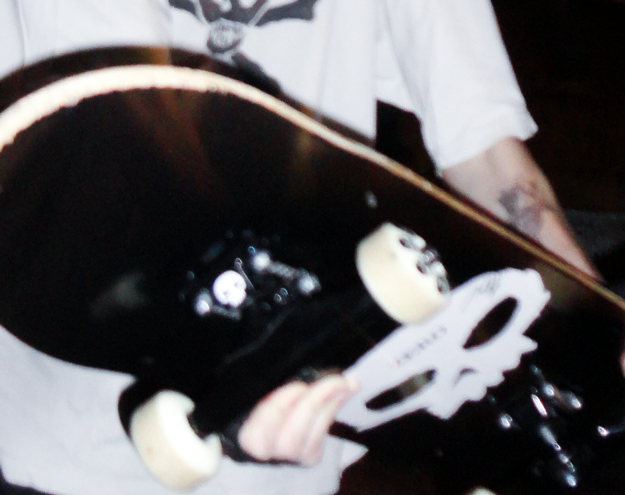
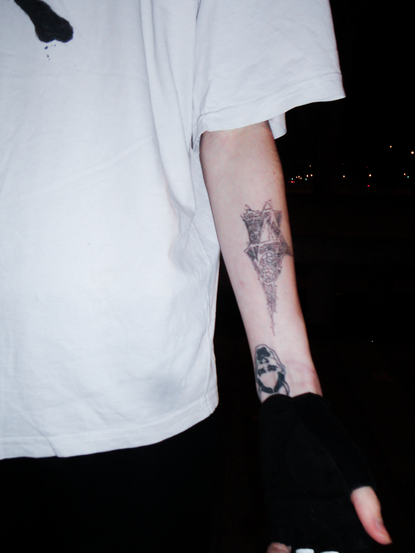
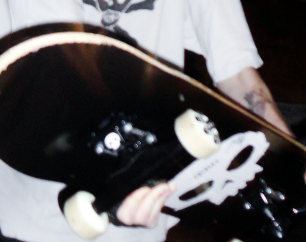
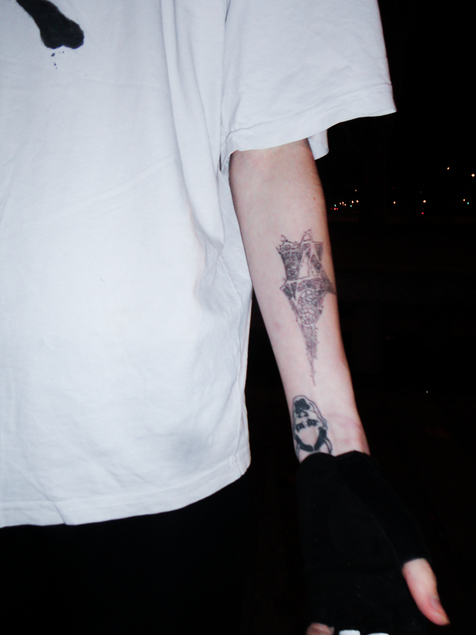

série photographique personnelle ayant pour élément central le taatouage '667'.
à travers cette série, j’ai voulu mettre en valeur un tatouage que j'ai dessiné dans un style néotribal, revisitant le logo du collectif de rap français le '667'.
le 667 étant associé à une communauté plutôt underground, essentiellement constituée de skateurs ou de graffeurs, le collectif a une identité propre et sombre.
j'ai ainsi voulu retranscrire cette image à travers un décor emblématique du skate (bastille), de nuit, avec un modèle que j'ai spécialement habillé pour l'occasion.
le tout habillant le tatouage que j'ai dessiné.
modèles : matthieu andres (tatoueur).
scroll à l'horizontal →

 


